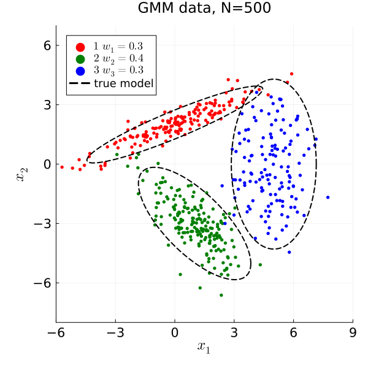
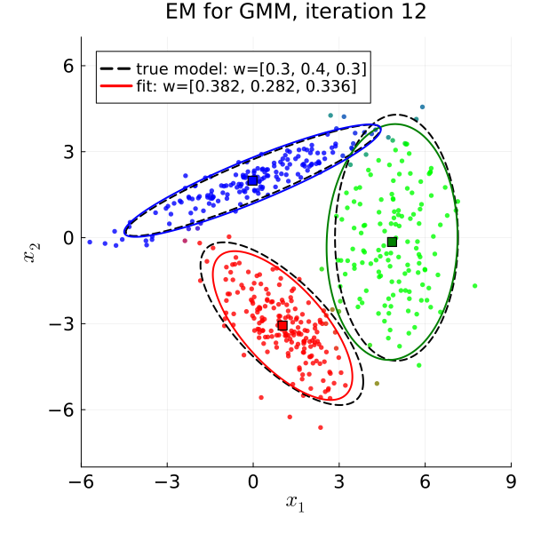
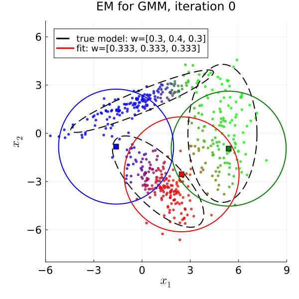
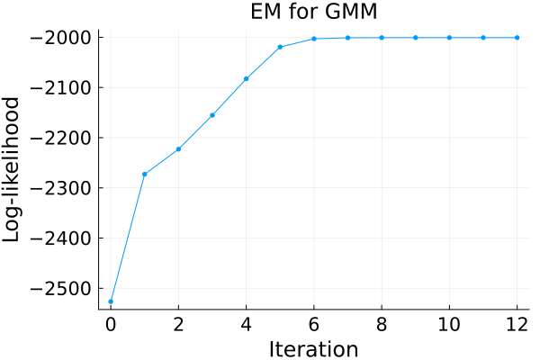

Gaussian mixture model
Illustrate fitting a Gaussian mixture model (GMM) to 2D data using the expectation-maximization (EM) algorithm in Julia.
The EM iterations are implemented directly here, without using any GMM fitting package. The only "external" algorithm used is k-means clustering from Clustering.jl, for (optionally) initializing the cluster centers.
Adapted from a python demo used in earlier EECS 553 semesters.
This page comes from a single Julia file: gmm1.jl.
You can access the source code for such Julia documentation using the 'Edit on GitHub' link in the top right. You can view the corresponding notebook in nbviewer here: gmm1.ipynb, or open it in binder here: gmm1.ipynb.
Setup
Add the Julia packages used in this demo. Change false to true in the following code block if you are using any of the following packages for the first time.
if false
import Pkg
Pkg.add([
"Clustering"
"InteractiveUtils"
"LaTeXStrings"
"LinearAlgebra"
"MIRTjim"
"Plots"
"Random"
"Statistics"
])
endTell Julia to use the following packages. Run Pkg.add() in the preceding code block first, if needed.
using Clustering: kmeans
using InteractiveUtils: versioninfo
using LaTeXStrings: @L_str, latexstring
using LinearAlgebra: cholesky, det, Symmetric, I
using MIRTjim: jim, prompt
using Plots: default, gui, savefig, RGB
using Plots: plot, plot!, scatter!, Animation, frame, gif
using Random: randperm, seed!
using Statistics: mean, std
default(); default(markersize=3, markerstrokecolor=:auto, label="",
tickfontsize=14, labelfontsize=16, legendfontsize=12, titlefontsize=16)The following line is helpful when running this file as a script; this way it will prompt user to hit a key after each figure is displayed.
isinteractive() ? jim(:prompt, true) : prompt(:draw);Generative model
A mixture of $K=3$ Gaussian components in 2D, with mixing weights $w_k$, means $μ_k$, and covariance matrices $Σ_k$:
$p(x) = \sum_{k=1}^K w_k \, N(x; μ_k, Σ_k).$
rot(θ) = [cos(θ) -sin(θ); sin(θ) cos(θ)] # 2D rotation matrix
w_true = [0.3, 0.4, 0.3]
μ_true = [[0, 2], [1, -3], [5, 0]]
Σ_true = [
rot(π/8) * [5 0; 0 0.1] * rot(π/8)',
rot(3π/4) * [3 0; 0 0.5] * rot(3π/4)',
[1 0; 0 4.],
]
K_true = length(w_true);To draw a sample from $N(μ, Σ)$, use $x = μ + A z$ where $Σ = A A'$ (here $A$ is the Cholesky factor) and $z$ has iid $N(0,1)$ entries.
To draw a sample from the mixture, first pick a component $k$ at random with probabilities $w_k$, then draw $x$ from that component.
function gen_gmm(N::Int, w, μ, Σ)
A = [cholesky(Symmetric(Σk)).L for Σk in Σ]
cw = cumsum(w)
labels = [findfirst(>(rand()), cw) for _ in 1:N] # random components
X = stack(μ[k] + A[k] * randn(2) for k in labels) # (2, N)
return X, labels
end
seed!(0)
N = 500
X, labels_true = gen_gmm(N, w_true, μ_true, Σ_true)
size(X)(2, 500)Ellipse for plotting
For a bivariate Gaussian, the squared Mahalanobis distance $(x-μ)' Σ^{-1} (x-μ)$ has a $χ^2$ distribution with 2 degrees of freedom, whose CDF is $1 - \exp(-r^2/2)$. So the ellipse containing probability mass $β$ has $r^2 = -2 \log(1-β)$.
function ellipse(μ, Σ; β = 0.9, nt = 201)
r = sqrt(-2 * log(1 - β))
t = range(0, 2π, nt)
A = cholesky(Symmetric(Σ)).L
return μ .+ r * A * [cos.(t)'; sin.(t)'] # (2, nt)
end;Plot the data and the true model
xlim = (-6, 9)
ylim = (-8, 7)
args = (;
xaxis = (L"x_1", xlim, -6:3:9),
yaxis = (L"x_2", ylim, -6:3:6),
aspect_ratio = 1,
size = (600, 600),
)
colors = (:red, :green, :blue, :magenta, :orange)
function plot_true!(p; μ = μ_true, Σ = Σ_true, extra::String = "")
for k in eachindex(μ)
z = ellipse(μ[k], Σ[k])
plot!(p, z[1,:], z[2,:]; color = :black, linestyle = :dash,
linewidth = 2, label = (k == 1 ? "true model$extra" : ""))
end
return p
end
pd = plot(; title = "GMM data, N=$N", args...)
for k in 1:K_true
ik = labels_true .== k
scatter!(pd, X[1,ik], X[2,ik]; color = colors[k],
label = latexstring("$k \\ w_$k = $(w_true[k])"),
)
end
plot_true!(pd)
# savefig(pd, "gmm1-data.pdf")
prompt()EM algorithm for GMM
Given the current parameter estimates, the E-step computes the "responsibilities" (posterior probabilities of each component for each sample):
$γ_{k,n} = \frac{w_k \, N(x_n; μ_k, Σ_k)}{\sum_{j=1}^K w_j \, N(x_n; μ_j, Σ_j)}.$
The M-step then updates the parameters using these soft assignments:
$N_k = \sum_{n=1}^N γ_{k,n}, \quad w_k = N_k / N, \quad μ_k = \frac{1}{N_k} \sum_{n=1}^N γ_{k,n} x_n, \quad Σ_k = \frac{1}{N_k} \sum_{n=1}^N γ_{k,n} (x_n - μ_k)(x_n - μ_k)'.$
Each EM iteration is guaranteed not to decrease the log-likelihood $\sum_{n=1}^N \log \left( \sum_{k=1}^K w_k \, N(x_n; μ_k, Σ_k) \right).$
Multivariate Gaussian pdf evaluated at each column of X:
function gauss_pdf(X::AbstractMatrix, μ::AbstractVector, Σ::AbstractMatrix)
d = size(X, 1)
L = cholesky(Symmetric(Σ)).L
R = L \ (X .- μ) # whitened residuals
return vec(exp.(-sum(abs2, R; dims=1) / 2)) / sqrt((2π)^d * det(Σ))
end;Initialization.
- Default: equal weights, means at $K$ randomly chosen data points, and covariances $s I$, where $s$ is the sample standard deviation of all entries of $X$.
- With
use_kmeans = true: use k-means to find initial cluster centers, then use the sample covariance and fraction of points in each k-means cluster for the initial covariances and weights.
function init_gmm(X::AbstractMatrix, K::Int; use_kmeans::Bool = false)
d, N = size(X)
if !use_kmeans
w = fill(1/K, K)
μ = [X[:,n] for n in randperm(N)[1:K]]
s = std(X) # mimic python demo
Σ = [s * Matrix(1.0I, d, d) for _ in 1:K]
return w, μ, Σ
end
out = kmeans(X, K)
μ = [out.centers[:,k] for k in 1:K]
w = [count(==(k), out.assignments) / N for k in 1:K]
Σ = map(1:K) do k
Z = X[:, out.assignments .== k] .- μ[k]
Z * Z' / size(Z, 2)
end
return w, μ, Σ
end;Plot the current GMM estimate. Color each data point using its responsibilities as RGB values (for $K=3$).
function plot_gmm(X, w, μ, Σ, γ, iter)
K = length(w)
p = plot(; title = "EM for GMM, iteration $iter", args...,
legend = :topleft)
if K == 3
# quantize colors: GR has a limited color table
color = [RGB(round.(γ[:,n]; digits=1)...) for n in axes(γ, 2)]
scatter!(p, X[1,:], X[2,:]; color, alpha = 0.8)
else
scatter!(p, X[1,:], X[2,:]; color = :gray, alpha = 0.8)
end
plot_true!(p; extra = ": w=$w_true")
wr = round.(w; digits = 3)
for k in 1:K
z = ellipse(μ[k], Σ[k])
plot!(p, z[1,:], z[2,:]; color = colors[k], linewidth = 2,
label = (k == 1 ? "fit: w=$wr" : ""))
scatter!(p, [μ[k][1]], [μ[k][2]]; color = colors[k],
marker = :square, markersize = 5, markerstrokecolor = :black)
end
return p
end;EM iterations, saving a plot of each iteration for animation:
function em_gmm(X::AbstractMatrix, K::Int;
niter::Int = 200, tol = 1e-3, use_kmeans::Bool = false,
)
N = size(X, 2)
w, μ, Σ = init_gmm(X, K; use_kmeans)
γ = zeros(K, N)
loglik = Float64[]
plots = Any[]
for iter in 1:niter
# E-step
for k in 1:K
γ[k,:] = w[k] * gauss_pdf(X, μ[k], Σ[k])
end
push!(loglik, sum(log, sum(γ; dims=1))) # for current parameters
γ ./= sum(γ; dims=1)
push!(plots, plot_gmm(X, w, μ, Σ, γ, iter-1))
# M-step
for k in 1:K
Nk = sum(γ[k,:])
w[k] = Nk / N
μ[k] = X * γ[k,:] / Nk
Z = X .- μ[k]
Σ[k] = (Z .* γ[k,:]') * Z' / Nk
end
if iter > 1 && loglik[end] - loglik[end-1] < tol
break
end
end
return (; w, μ, Σ, γ, loglik, plots)
end;Run EM
seed!(3) # for random initialization
K = 3
use_kmeans = false # change to `true` for k-means initialization
result = em_gmm(X, K; use_kmeans)
niter = length(result.loglik)13Final GMM fit:
pf = result.plots[end]
# savefig(pf, "gmm1-fit.pdf")
Estimated and parameters (of course the ordering can vary):
[round.(result.w, digits=2) w_true]3×2 Matrix{Float64}:
0.38 0.3
0.28 0.4
0.34 0.3[round.(hcat(result.μ...), digits=2) hcat(μ_true...)]2×6 Matrix{Float64}:
1.03 4.84 -0.02 0.0 1.0 5.0
-3.07 -0.15 1.99 2.0 -3.0 0.0round.([hcat(result.Σ...); hcat(Σ_true...)], digits=2)4×6 Matrix{Float64}:
1.29 -0.94 1.13 0.1 4.36 1.74
-0.94 1.46 0.1 3.67 1.74 0.83
4.28 1.73 1.75 -1.25 1.0 0.0
1.73 0.82 -1.25 1.75 0.0 4.0Animation of EM iterations
anim = Animation()
for p in result.plots
frame(anim, p)
end
gif(anim, "gmm1.gif"; fps = 2)
Log-likelihood vs iteration
The log-likelihood is non-decreasing, as guaranteed by EM theory.
pl = plot(0:niter-1, result.loglik; marker = :circle,
xaxis = ("Iteration", 0:2:niter-1),
yaxis = ("Log-likelihood",),
title = "EM for GMM",
size = (600, 400),
)
# savefig(pl, "gmm1-loglik.pdf")
prompt()This page was generated using Literate.jl.